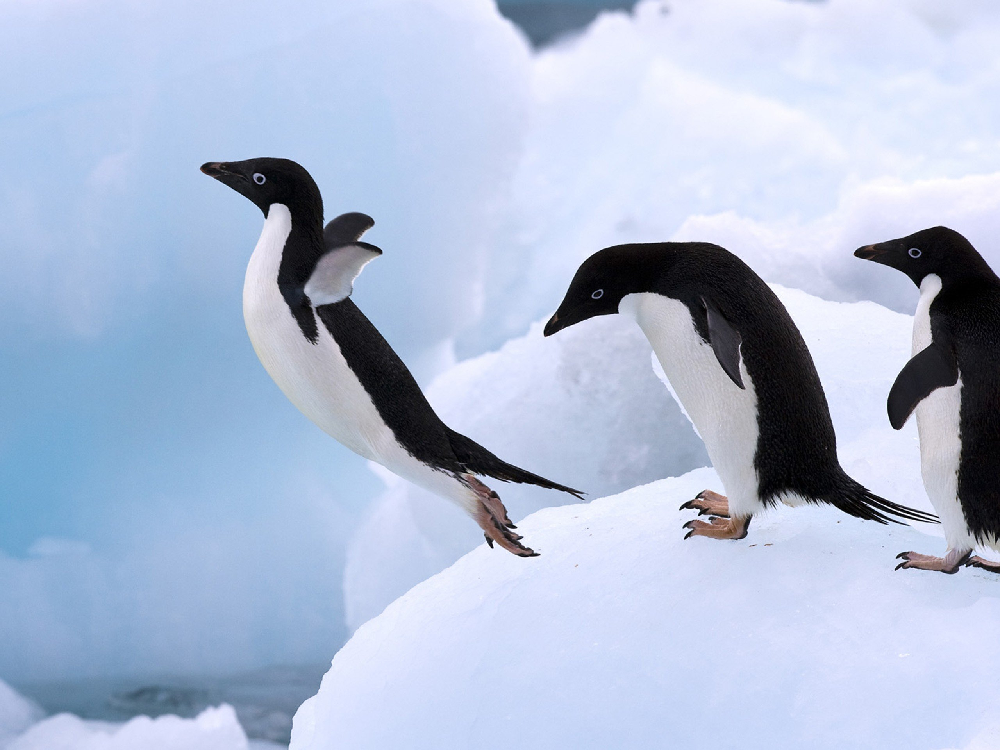

Projects- Transforming Vision into Reality
Undertaking projects is where I find the true essence of learning Data Science. They serve as a platform to showcase creativity and innovation. Projects are indispensable as they facilitate skill development by providing hands-on experience that bridges theory with real-world applications. Moreover, projects foster problem-solving and critical thinking, while collaboration enhances networking and teamwork skills.
Projects are essential for acquiring and demonstrating practical skills in Data Science.
K Means Model on Penguin Data Set

This project aims to find hidden patterns in the Penguin dataset, knowing about their behaviour patterns which will allow the organization to educate their employees on how to take care for the penguins.